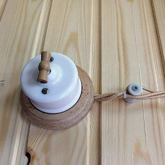
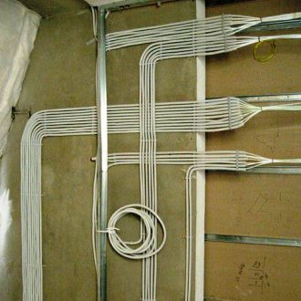

Качественный электромонтаж в Санкт-Петербурге и ленобласти, стаж 12 лет. Частный электрик, недорого и качественно.
Тел. 8 904 642 08 57 Николай.

Прокладка электропроводки.

Расценки на прокладку электропроводки в квартире посмотрите ниже! Позвоните мне!
Прокладка проводки - один из важнейших этапов ремонтно-строительных работ, который требует исключительно профессионального подхода. Если поклеить обои, зашпаклевать стены и покрасить плинтуса еще может любитель, решивший сэкономить на отделочниках, то электропроводку ему проложить качественно и с соблюдением норм безопасности не удастся, как бы он ни хотел и ни старался.
Электрик по прокладке электропроводки.
Опытный высококвалифицированный мастер электрик предлагает проложить электропроводку в рамках конкретного ремонта в городской квартире, загородном доме, коммерческом офисе или любом другом помещении. Выполняю весь комплекс прокладки проводки, связанных с организацией электроснабжения на отдельно взятой площади различного назначения.
Сколько стоит прокладка проводки в квартире и на даче?
Прокладка проводки в квартире. |
||
Вариант квартиры. |
Цена за работу без материала, в рублях. |
Расценки за работа + материалы. |
Прокладка проводки однокомнатной квартиры, под ключ. |
30000 |
41000 |
Двухкомнатной. |
39000 |
55000 |
Трёхкомнатной. |
46000 |
66000 |
Четырех комнатной квартиры, электромонтаж под ключ. |
57000 |
80000 |
Прокладка электропроводки в частном доме. |
||
Площадь пола в кв. метрах частного дома. |
Работа в руб. |
Работа + материалы. |
70 кв. м. |
50000 |
70000 |
100 кв. м. |
70000 |
90000 |
130 |
95000 |
120000 |
160 |
115000 |
150000 |
200 |
137000 |
167000 |
250 кв. м. |
160000 |
190000 руб. |
|  |  |
В комплекс оказываемых услуг входит:
- замена проводов любой степени сложности;
- установка, а также перестановка розеток и выключателей;
- составление схемы расположения всего электрического оборудования и осветительных приборов;
- расчет потребления мощности и грамотное распределение этой мощности по всей проводке.
Прокладка электропроводки в исполнении опытного квалифицированного мастера не займет много времени, при обеспечении должного качества проведенных работ.
Дается гарантия на всю проводку с последующим бесплатным устранением всех возникающих в течение гарантийного срока проблем электрического характера.
Расчет стоимости прокладки электропроводки ведется заранее и озвучивается заказчику в полном объеме. Мастер-электрик целиком и полностью несет ответственность за весь объем выполненных работ, сдает их клиенту на основании акта выполненных работ. Возможны любые формы расчета, по договоренности.
Осуществление монтажа электропроводки ведется с соблюдением всех установленных эксплуатационных норм и правил безопасности. Обеспечивается простота проводки и доступа к ней на случай возникновения проблем.
Мастер работает с домами частного сектора, в том числе, и с воздушными линиями электропроводки по 0,4 кВт. Кроме того, ведется установка и последующее обслуживание электросчетчиков и прочего электрического оборудования. Счетчики, а также другие элементы электропроводки также устанавливаются в легкодоступных местах - так, чтобы к ним можно было подобраться без нарушения значимых интерьерных деталей.
Частный мастер, проводящий монтаж электропроводки при конкретных ремонтно-строительных работах, гарантирует изолированность и закрытость, а значит, безопасность для окружающих всех токопроводящих элементов и узлов.
Ведется замена уже существующей электропроводки. Быстро, качественно и недорого. С соблюдением всех эксплуатационных и безопасных требований. Работаю также с обустройством электрокаминов, теплых полов в городском и загородном жилье, коммерческих офисах и т. д.
Безопасная электропроводка от мастера.
Обращайтесь за помощью в осуществлении электропроводки только к опытным квалифицированным специалистам-электрикам. От этого напрямую зависит качественная и безопасная эксплуатация вашего дома, жизнь и здоровье вас и ваших близких, которые невозможно измерить материальным ущербом. Не стоит экономить на самом дорогом!

Сколько будут стоить материалы.
Расценки на электропроводку.
Электромонтаж в доме.
Замена электропроводки в двухкомнатной квартире?.
Сколько стоит сделать внутреннюю проводку?.
Установка люстр и светильников.
Электромонтаж проводов в бане.